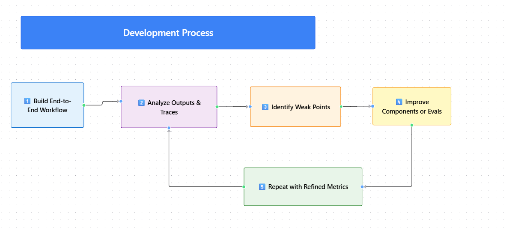

Module 4 — Episode 7
Training:Agentic AI Training
🎯 Learning Objectives
By the end of this episode, you will be able to:
- ✅ Describe the iterative build–analyze cycle used in developing agentic AI workflows
- ✅ Apply structured error analysis and evaluation methods to guide improvements
- ✅ Balance end-to-end and component-level optimization for system maturity
🧭 Overview
This episode summarizes the practical development process for building agentic AI workflows.
It emphasizes the interplay between building (coding and improving systems) and analyzing (evaluating outputs, running error analysis, and refining components).
The approach mirrors real-world AI development, where iteration, measurement, and targeted improvements drive progress.
🧱 Prerequisites
Readers should already understand:
- The concept of agentic workflows and their component structure
- How to perform basic evaluation (evals) and error analysis
- Concepts covered in earlier episodes of this module (e.g., workflow design, debugging strategies)
🔑 Core Concepts
- Build–Analyze Cycle – The iterative process of alternating between coding improvements and analyzing system performance to guide next steps.
- End-to-End Evaluation – Assessing the overall workflow’s performance to understand aggregate strengths and weaknesses.
- Component-Level Evaluation – Measuring the performance of individual workflow components to pinpoint local issues.
- Error Analysis – Systematic review of incorrect or suboptimal outputs to determine root causes and improvement opportunities.
🖼 Visual Explanation
 Caption:This diagram illustrates the cyclical development process: build an initial workflow, analyze outputs and traces, identify weak points, improve components, and repeat with refined metrics.
⚙️ Technical Breakdown
How It Works
1. Initial Build:Start with a quick, functional end-to-end workflow — even if imperfect.
This version provides a baseline for analysis.
2. Manual Analysis:Review traces and outputs to gain intuition about where the workflow succeeds or fails.
3. Early Evals:Create small evaluation datasets (10–20 examples) to measure end-to-end performance.
4. Structured Error Analysis:Quantify which components most frequently cause subpar results.
5. Component-Level Evals:As the system matures, introduce targeted metrics for specific modules or functions.
6. Iterative Refinement:Alternate between improving components and re-evaluating the full system.
Why It Works
- Focuses developer effort: Analysis directs attention to the most impactful improvements.
- Prevents premature optimization: You validate end-to-end performance before deep-diving into details.
- Builds measurable progress: Each iteration yields data-driven evidence of improvement.
When To Use It
✅ Use this process when:
- Developing complex, multi-agent or multi-component AI workflows
- Refining early prototypes into production-ready systems
- Diagnosing unexpected behavior or performance regressions
❌ Avoid skipping analysis when:
- You’re tempted to keep coding without measuring results
- You lack representative eval data — analysis without data can mislead
Trade-offs & Limitations
- Time Investment: Analysis can feel slow but prevents wasted build cycles.
- Tooling Overhead: Off-the-shelf tools may not fully capture your workflow’s unique behavior.
- Custom Evals Required: Generic metrics often fail to reflect domain-specific correctness.
Performance Considerations
- Trace Logging: Use detailed traces to identify performance bottlenecks and runtime costs.
- Eval Efficiency: Keep early eval datasets small for rapid iteration.
- Custom Metrics: Tailor metrics to capture both correctness and efficiency (e.g., latency, token usage).
💻 Code Examples
Minimal Example
# Pseudocode illustrating the build–analyze cycle
def build_workflow():
# Step 1: Build or update the agentic workflow
return AgenticWorkflow(components=[...])
def analyze_workflow(workflow, eval_data):
# Step 2: Run evaluation and error analysis
results = workflow.run(eval_data)
errors = identify_errors(results)
return summarize_analysis(errors)
def improve_components(workflow, analysis):
# Step 3: Apply targeted improvements
for component, issues in analysis.items():
workflow.tune_component(component, issues)
return workflow
# Iterative development loop
workflow = build_workflow()
for iteration in range(5):
analysis = analyze_workflow(workflow, eval_data)
workflow = improve_components(workflow, analysis)
🧩 Key Takeaways
- Agentic AI development is iterative, not linear — expect to alternate between building and analyzing.
- Early, small-scale evals are better than no evals — they guide intuition and prioritization.
- Custom evaluation metrics often outperform generic tools for specialized workflows.
- Mature systems rely on disciplined error analysis to focus engineering effort efficiently.
🚀 Next Steps
In the next module, we’ll explore advanced design patterns for building highly autonomous agents — taking the foundational workflow discipline from this module to a new level of sophistication.